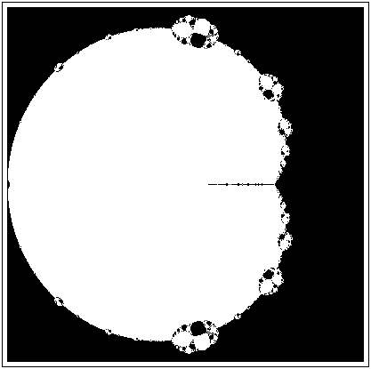
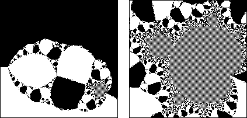

| For the details of the Curry-Garnett-Sullivan experiment, first note that for all values of c,
z = 1 is a root of the polynomial
fc(z) = z3 + (c - 1)z - c. |
| fc(1) | = 13 + (c - 1)⋅1 - c |
| | = 1 + (c - 1) - c |
| | = 0 |
|
| Always starting with z0 = 0, Curry, Garnett, and Sullivan
painted c |
| black if Newton's method converged to 1, |
| white if it converged to some other root of fc(z), and |
| grey if it converged to a cycle of at least 2 points. |
| Here are their results, with vertical and horizontal ranges -2 to 2. |
|  |
| On the left below is a magnification of the blob on the top of the
picture; on the right, a magnification of the little grey region. |
|  |
| It's the Mandelbrot set, yet again. |
| Keep in mind the function being iterated is Newton's method for a
cubic polynomial. It is not at all like z2 + c. Yet here's the Mandelbrot
set, yet again. |